黄色い菊が咲きましたが地味ですね。
2025/01/11
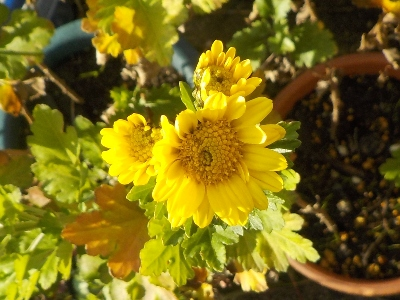
地植えなら有だけど鉢植でこれは寂しいな。
花が終わったら地植えにしよう。
茎が真っすぐで固いので切り花にピッタリです。
2025/01/11

地植えなら有だけど鉢植でこれは寂しいな。
花が終わったら地植えにしよう。
茎が真っすぐで固いので切り花にピッタリです。
2024/12/31
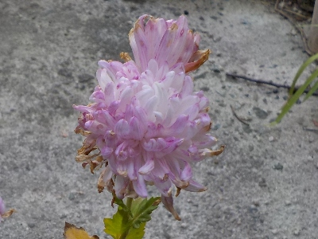
白い菊はもうおしまいですね。もともと真っ白だったんですがピンクぽくなりました。
白い菊って安定してないんだ。
2024/11/17
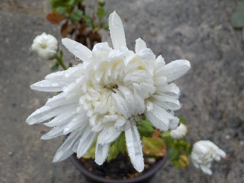
今年挿し芽した切り花の菊が咲きました。これはちょっと形がいびつですが、普通に育って咲くものなんですね。
お店で販売している切り花を買って、花が終わったら挿し芽で育てればいくらでも増やせそうです。
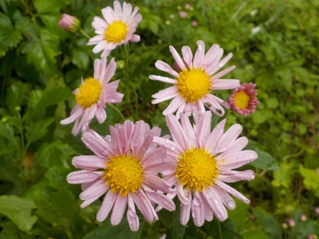
庭に植えてある別の菊も咲いてます。きれいでいいですね。
今年は菊を大量に増やしたので冬の間は十分楽しめると思いますが、そんなにいっぱいはいらない。
1種類2本か3本あれば十分かな。増やしたけど、管理が面倒なので減らした方が良さそうです。
2024/09/28
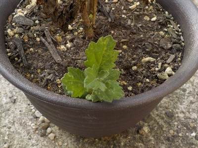
この菊も地下茎で増えるんだ。
挿し芽でも地下茎でも増えるんだったら、いくらでも増殖できますね。
今年は菊を沢山増やしたので、もう増やすつもりはないですけど。
2024/08/06
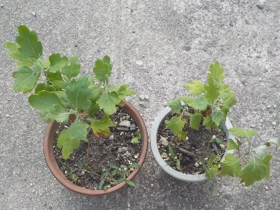
またまたかもしれないですが、小さい鉢に植えた菊は茎が細いです。そして背も低い。
このまま育てても貧弱なままな気がします。
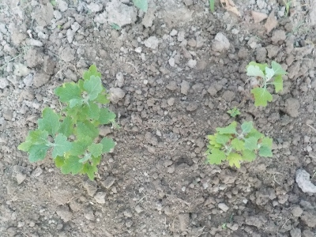
なので大きく育つように地植えにしました。
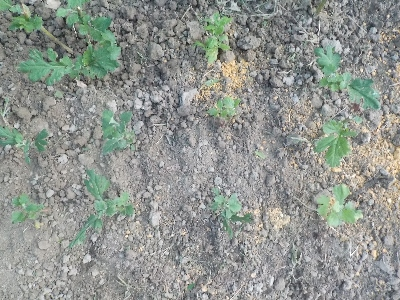
６月に挿し芽した菊も地植えにしました。
菊の花壇が完成です。切り花にするなら鉢植えよりも地植えの方が水の管理が楽なのでいいですね。
2024/08/03
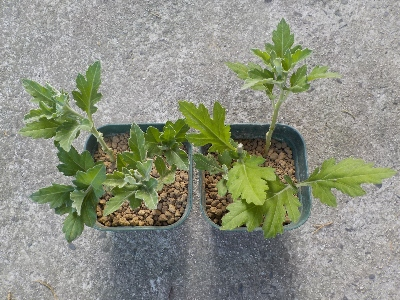
鉢植えの菊の背が高くなり、不安定なので切り戻ししました。
切ったものを使って挿し木しました。
今後は茎を伸ばしたいので、挿し木はこれが最後かな。
2024/06/04
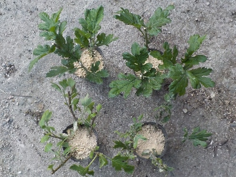
地植の菊を切り戻しした時にでた茎で、挿し芽しました。
菊はもう沢山あるので、挿し芽しなくてもいいんですけどね。なんか全部捨てる気になれなくて、一部生かしました。
順調にいったら冬に花が沢山見れそうです。
2024/05/29
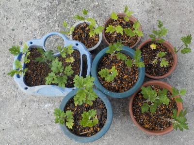
以前に挿し芽して増やした菊を植え替えしました。
ちゃんと管理していなかったので、何色の菊が何時咲くかはわかりません。
2024/05/13
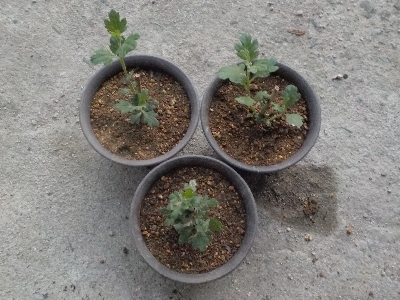
挿し芽の菊がしっかり育っているので鉢上げしました。
菊って3本仕立てとか言うので1鉢に3本植えると思っていました。そうじゃなくて、1本の菊を３本とか複数本に分岐させるそうです。本を読んで知りました。
これも分岐が上手にできるかな？
2024/03/24
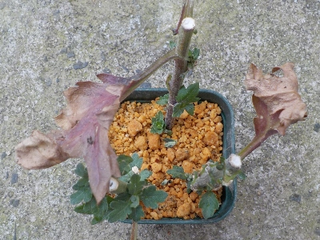
もともとあった葉っぱはすっかり枯れましたが、脇から小さい葉っぱが育っています。
耐寒性があったみたいですね。
確認していませんが、たぶん根っこが出ているんじゃないかな。
2024/01/28
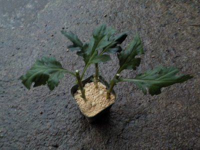
菊の花を持って帰る途中に何かにぶつかったみたいで、花が落ちてしまいました。
飾れないので挿し芽しました。
売ってる花はハウス栽培専用なので路地では育たないって聞きますが、実際どうなんでしょうね。
冬に挿し木して育つんだったら、家で育ててもいいかなと思いやってみました。
これが成功したら、他の切り花もいろいろ挿し芽したくなるんだろうな。
2023/12/24
菊を2年間かまっていませんでした。
2022/11/20
今年は菊をかまっていません。
2022/01/23
挿し木した冬の菊が咲いています。
2021/11/28
追加で挿し木した菊を鉢上げしました。
2021/11/13
今年挿し木した菊が咲きました。
2021/11/07
菊が咲きだしました。
2021/07/31
菊の挿し木を追加しました。
2021/07/11
密閉での菊の挿し芽をやめました。
2021/06/26
挿し芽の菊が溶けました。
2021/05/30
菊を大量に挿し芽しました。
季節ごとに菊を咲かせたいです。